Nadia está en línea · responde al momento
Tu viaje a Rusia, explicado como en casa.
Somos Katia y Nadia, dos hermanas ruso-mexicanas creadas con IA. Te resolvemos dudas al momento y te pasamos con un asesor humano de Viajes Zvezda, especialistas en Rusia desde 2002, para tu cotización en pesos.
Viajes Zvezda · agencia de la CDMX desde 2002 · guías en español · asistencia 24/7 en sus viajes a Rusia

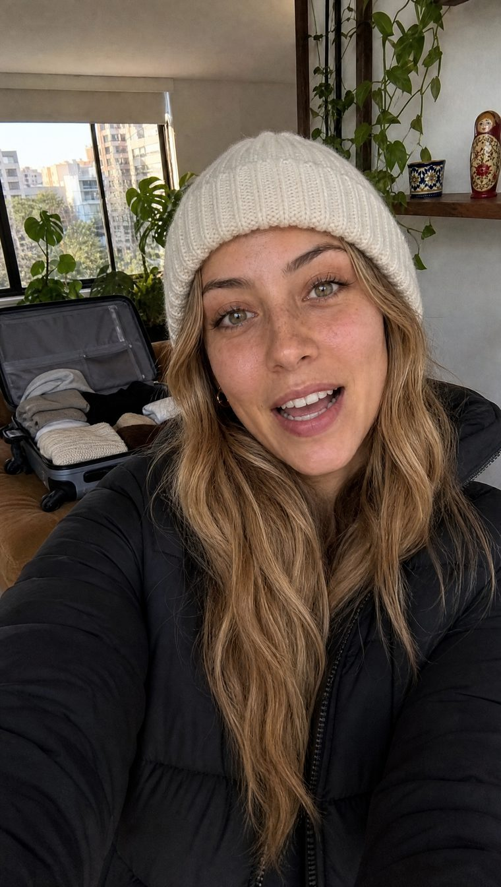
personajes creados con IA
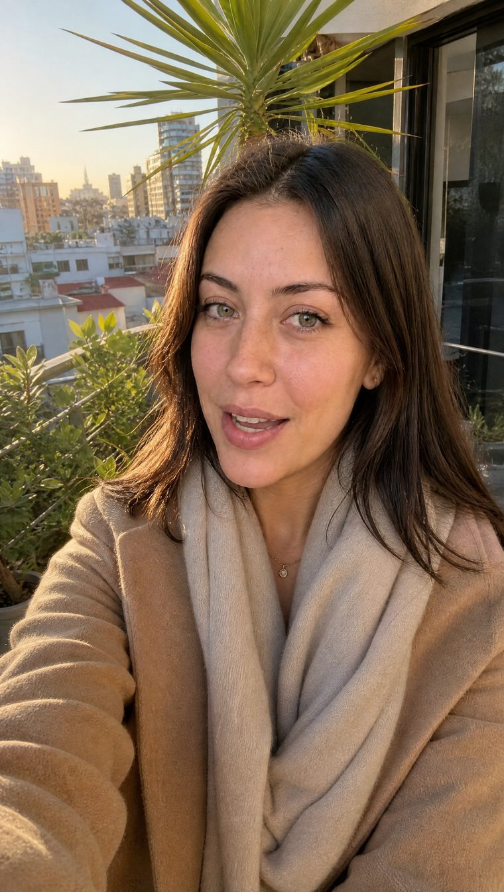
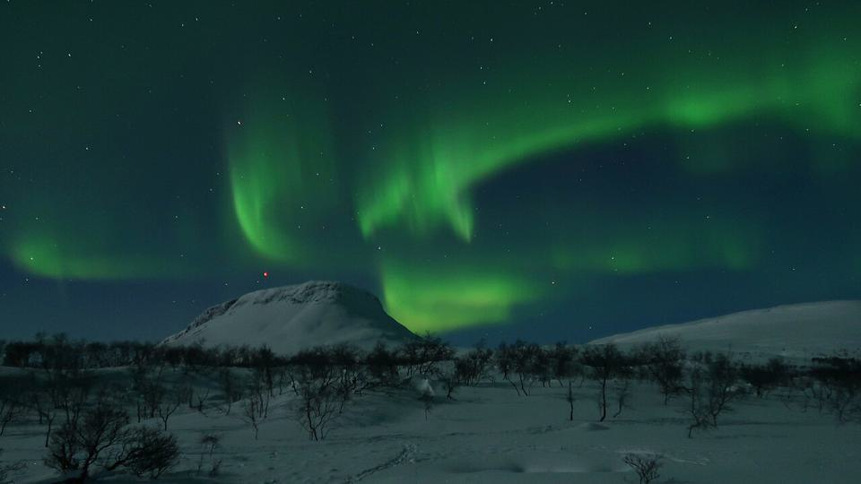
Catálogo de Viajes Zvezda
¿A dónde te late ir?
20 itinerarios con guía en español. Elige una región, abre el que te llame y pregúntale a Nadia lo que quieras.
RusiaEncantos de Rusia8 días · Moscú · San Petersburgo RusiaAnillo de Oro8 días · Moscú · Sergiev Posad · Suzdal
RusiaAnillo de Oro8 días · Moscú · Sergiev Posad · Suzdal RusiaSinfonía RusaPrivado8 días · Moscú · San Petersburgo
RusiaSinfonía RusaPrivado8 días · Moscú · San Petersburgo RusiaTroyka RusaAnillo de Oro11 días · Moscú · Sergiev Posad · Vladimir
RusiaTroyka RusaAnillo de Oro11 días · Moscú · Sergiev Posad · Vladimir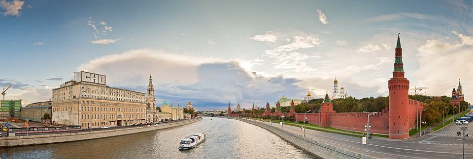
RusiaBalalayka10 días · Moscú · San Petersburgo · Tallin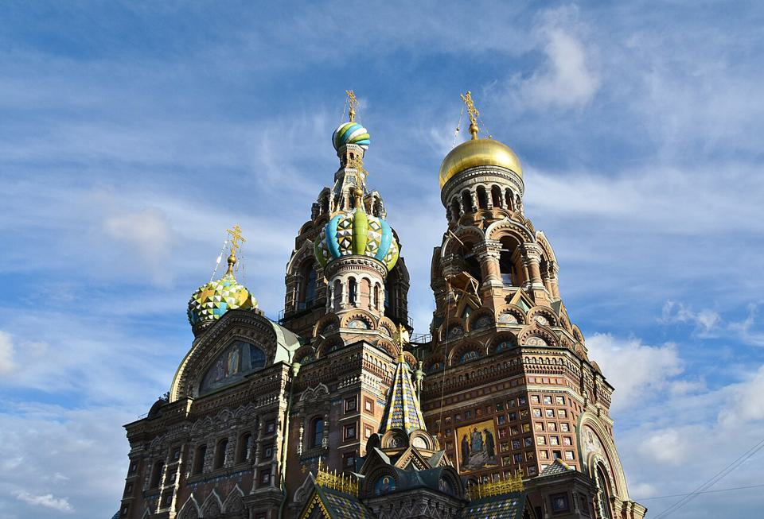
RusiaKalinka10 días · Moscú · San Petersburgo · Helsinki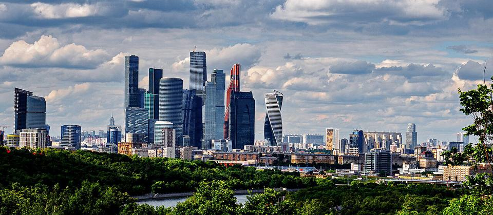
RusiaStop Over Moscú4 días · Moscú RusiaStop Over San Petersburgo4 días · San Petersburgo
RusiaStop Over San Petersburgo4 días · San Petersburgo BálticosPaíses Bálticos8 días · Vilnius · Riga · Tallinn
BálticosPaíses Bálticos8 días · Vilnius · Riga · Tallinn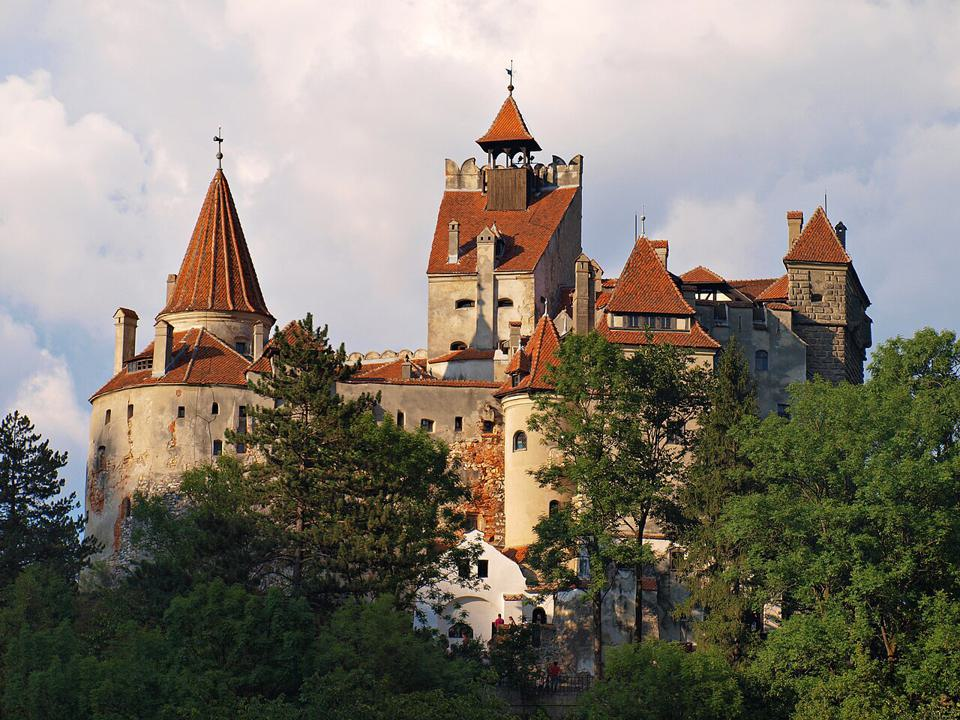
Europa del EsteRumaniaHuellas de Drácula7 días · Bucarest · Sighisoara · Bucovina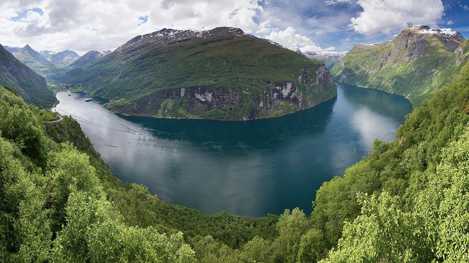
EscandinaviaViaje de los Sueños14 días · Copenhague · Oslo · Bergen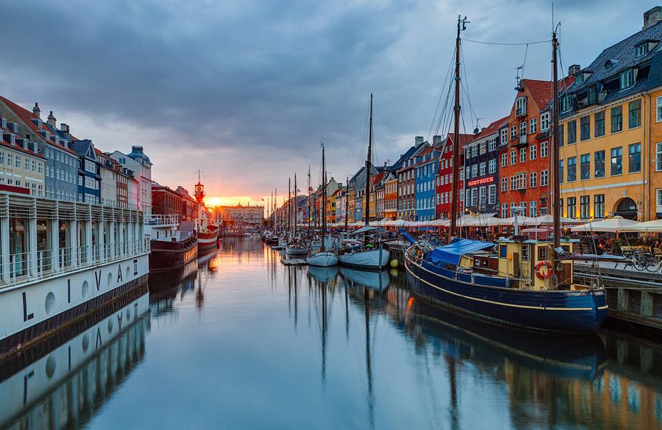
EscandinaviaSueños de Escandinavia11 días · Copenhague · Oslo · Bergen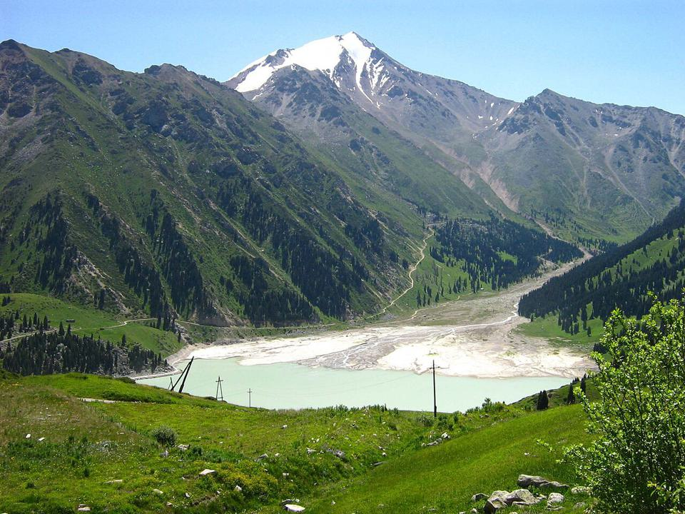
Asia CentralEl Viaje al Centro de EurasiaKazajistán8 días · Almaty · Turquestán · Shymkent Europa del EstePoloniaViaje Completo9 días · Varsovia · Cracovia · Wroclaw
Europa del EstePoloniaViaje Completo9 días · Varsovia · Cracovia · Wroclaw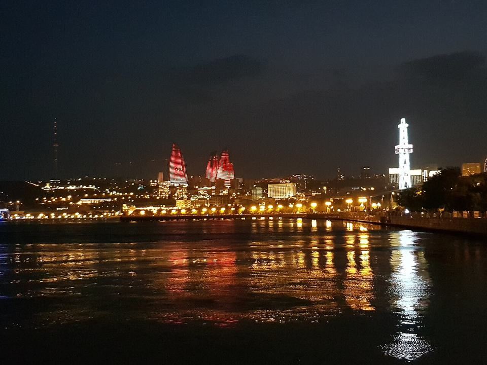
CáucasoLa Magia del Cáucaso14 días · Bakú · Sheki · Tbilisi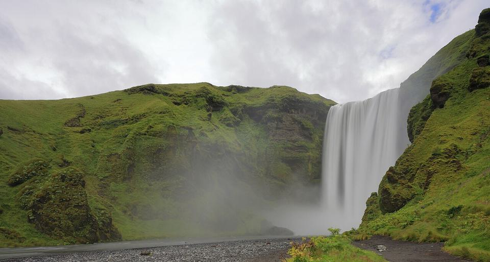
Atlántico NorteMilagros de Islandia8 días · Reykjavik · Akureyri · Husavik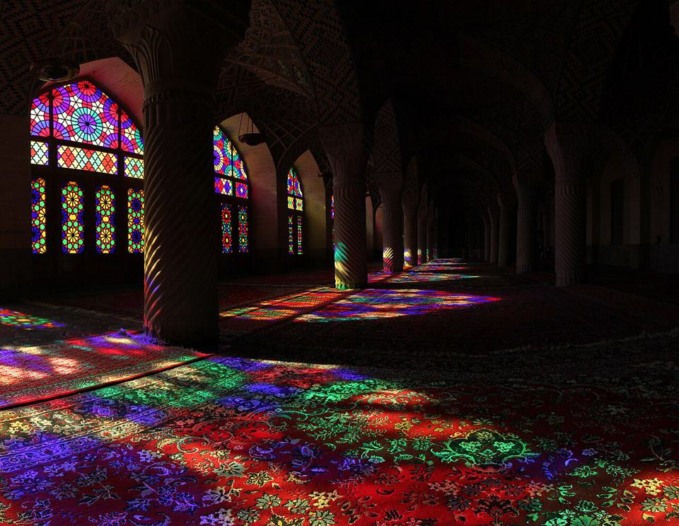
Medio OrienteLas Perlas de Irán9 días · Teherán · Isfahán · Yazd Europa del EsteRumania y Bulgaria10 días · Bucarest · Sibiu · Sighisoara
Europa del EsteRumania y Bulgaria10 días · Bucarest · Sibiu · SighisoaraItinerarios del catálogo de Viajes Zvezda. Precios, fechas y disponibilidad se confirman al cotizar. Los vuelos internacionales no están incluidos.
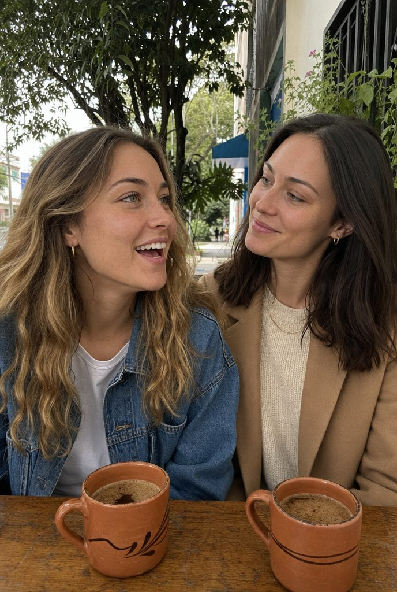
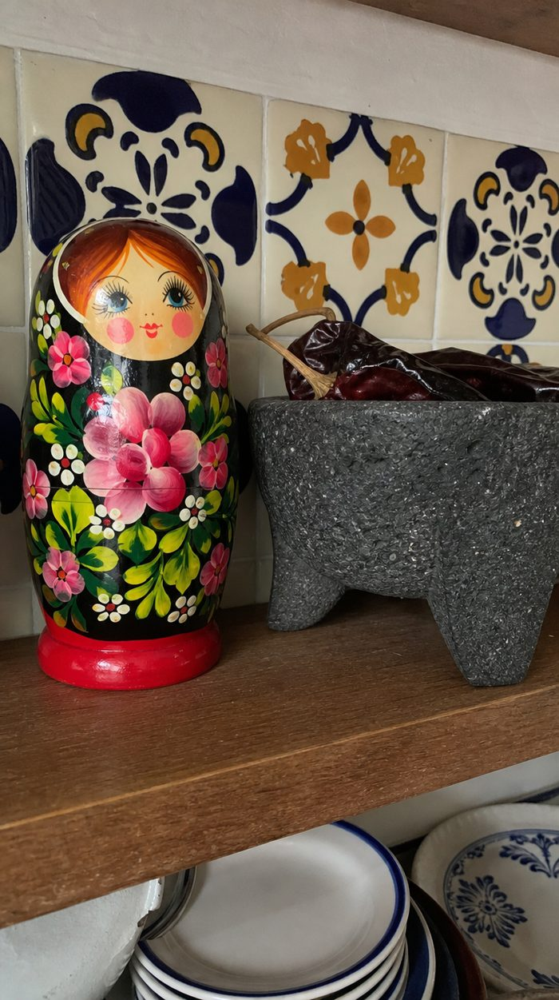
Quiénes somos
Rusia, contada a la mexicana.
Katia y Nadia son dos hermanas ruso-mexicanas creadas con inteligencia artificial. Su historia familiar es ficción, y te lo decimos de frente. Existen para explicarte lo que nadie te explica antes de ir: la visa, el dinero, el clima y qué viaje sí vale la pena.
Lo que sí es de carne y hueso: Viajes Zvezda, la agencia familiar de la Ciudad de México que desde 2002 cotiza, vende y opera cada viaje, con guías en español y asistencia 24/7 en sus viajes a Rusia.
Cuándo ir
Cada temporada tiene su viaje.
La mejor época depende de lo que quieras vivir: días que no se acaban, ciudades nevadas o el cielo encendido de verde.
Noches blancas
La mejor temporada para Rusia. En junio, San Petersburgo casi no oscurece.
Ver Encantos de RusiaRusia bajo la nieve
Moscú y San Petersburgo nevados, en un viaje privado que sale todo el año.
Ver Sinfonía RusaAuroras en Laponia
Huskies, rompehielos y safari de auroras boreales, en salidas fijas de invierno.
Ver Sueños del InviernoCómo funciona
De la duda al viaje, en tres pasos.
Platícanos
Nadia te responde al momento: qué viaje te conviene, cuándo ir, la visa, el dinero y el clima.
Te pasamos con un asesor
Con un toque le mandas tu ficha a Viajes Zvezda por WhatsApp, sin tener que repetir todo.
Cotizas y viajas
Un asesor humano te manda el itinerario y la cotización en pesos. Tú decides.
Dudas frecuentes
Lo que todos nos preguntan.
¿No ves la tuya? Nadia la contesta al momento.
¿Necesito visa para ir a Rusia?
Sí, los mexicanos necesitan visa. El trámite tarda alrededor de una semana y su costo va aparte del paquete. Tu asesor de Viajes Zvezda te orienta.
¿Puedo pagar con tarjeta allá?
Las tarjetas Visa y Mastercard emitidas fuera de Rusia no funcionan allá. Lleva efectivo en dólares o euros, en billetes nuevos y sin daños.
¿Cuál es la mejor época para ir?
De mayo a septiembre; en junio, San Petersburgo vive sus noches blancas. Y en diciembre, si lo que quieres es nieve.
¿Los paquetes incluyen el vuelo?
No. Incluyen hoteles, traslados, visitas y guía en español; los vuelos internacionales se cotizan aparte.
¿Cuánto cuesta?
Depende del itinerario, la fecha y cuántos viajan. Tu asesor de Viajes Zvezda te manda la cotización exacta en pesos, sin compromiso.
¿Nadia es una persona?
No. Nadia es una asistente virtual con inteligencia artificial: resuelve dudas al momento y deja lista tu ficha. Quien cotiza y te acompaña en la reserva es un asesor humano de Viajes Zvezda.
¿Quiénes son ustedes?
Somos 2RusasMexas, una marca de contenido y asesoría de viajes. Katia y Nadia son personajes creados con inteligencia artificial, y su historia familiar es ficción. La cotización, el cobro y la operación de cada viaje los hace Viajes Zvezda.
¿Todavía no sabes cuál elegir?
Cuéntale a Nadia cuántos días tienes y qué te gusta. En un par de minutos te dice qué viaje te conviene.